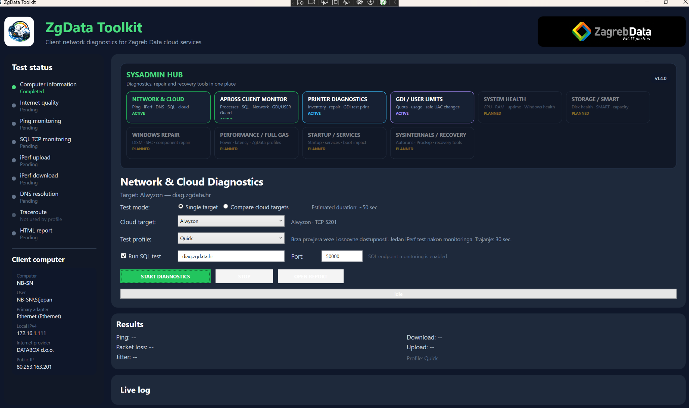
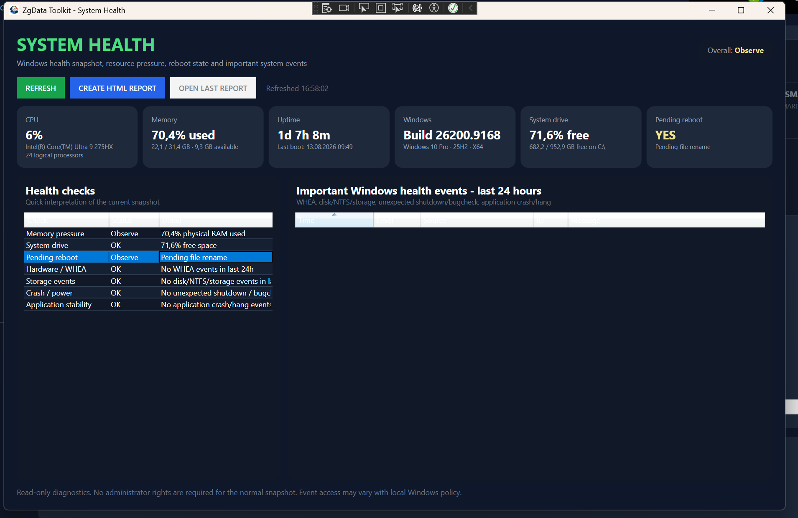

Pregled aplikacije
Verzija 1.4.0 uvodi centralni SysAdmin Hub iz kojeg su aktivni moduli dostupni na jednom mjestu. Postojeći Network & Cloud Diagnostics ostaje osnovni workflow, a dodatni moduli služe za Apross, printere, Windows resurse i System Health.

Network & Cloud Diagnostics
- Provjera lokalnog računala i aktivnog mrežnog adaptera.
- Internet quality, ping monitoring, packet loss i jitter.
- SQL TCP monitoring prema Zagreb Data endpointu.
- iPerf upload i download mjerenja.
- DNS resolution i traceroute prema odabranom profilu.
- Single target i Compare cloud targets način rada.
- HTML report nakon završenog testa.
Apross Client Monitor
Namijenjen dijagnostici lokalno pokrenutog Aprossa i procesa koje Apross pokreće ili koristi.
- Glavni Apross proces, child procesi i pomoćni report/browser procesi.
- CPU, RAM, handles, GDI i USER objekti te Responding/Not responding stanje.
- TCP konekcije povezane s konkretnim procesom i PID-om.
- SQL, Web/API, file share i ostali endpointi.
- PROBLEM HAPPENED marker za označavanje trenutka problema.
- HTML/CSV izvještaj i timeline za naknadnu analizu.
Resource Guard
Resource Guard je dio Apross Client Monitora i služi za dugotrajnije praćenje resursa kada se sumnja na GDI/USER leak ili rast drugih procesa.
| Metrička grupa | Što se prati |
|---|---|
| GDI | Baseline, current, peak, delta, quota, postotak iskorištenja i trend. |
| USER | Baseline, current, peak, delta, quota, postotak iskorištenja i trend. |
| Handles | Trenutačni broj, peak i kretanje kroz vrijeme. |
| Private RAM | Privatna memorija procesa, usklađena između live prikaza i HTML reporta. |
GDI / USER Resource Limits
Prikazuje trenutačne sistemske kvote i realnu potrošnju Apross procesa.
- SET ZGDATA RECOMMENDED postavlja preporučene vrijednosti.
- RESTORE WINDOWS DEFAULTS vraća 10000 / 10000.
- Toolkit ostaje pokrenut bez administratorskih prava; samo helper za HKLM promjenu traži UAC.
- USER quota se ne podiže iznad 10000 bez konkretnih mjerenja koja to opravdavaju.
Printer Diagnostics & Repair
- Inventar instaliranih printera, Windows status, port, Host/IP, driver i broj print jobova.
- Provjera dostupnosti mrežnog printera i print/service portova gdje je moguće.
- Prepoznavanje unavailable/warning printera i pregled razloga dijagnoze.
- Ručno osvježavanje queue kandidata i otkazivanje problematičnog print joba.
- Safe Repair može isključiti “Let Windows manage my default printer”.
- Microsoft Print to PDF može se postaviti kao siguran default kada je postojeći default nedostupan.
- TEST PRINT koristi klasični Windows GDI pipeline i veliki IT smiley sastavljen od 0/1 elemenata.
System Health
Read-only pregled osnovnog stanja Windows računala. Normalni snapshot ne zahtijeva administratorska prava.
- CPU load i model procesora.
- Fizički RAM: ukupno, iskorišteno i dostupno.
- Uptime i vrijeme zadnjeg boota.
- Windows edition, verzija, build i arhitektura.
- Slobodan prostor sistemskog diska.
- Pending reboot detekcija.
- WHEA, disk/NTFS/storage, Kernel-Power/BugCheck i application crash/hang događaji zadnja 24 sata.
- Overall status te pojedinačni Health checks.
- HTML System Health report.

Apross Regional Settings
System Health provjerava regionalne preduvjete koji su važni kod pripreme Windows računala za Apross.
| Postavka | Vrijednost za Apross |
|---|---|
| Culture | hr-HR |
| Region | Croatia |
| Short date | dd.MM.yy |
| Long date | dd.MMMM.yyyy |
| Short time | HH:mm |
| Long time | HH:mm:ss |
| System locale | Croatian (Croatia) / hr-HR |
Izvještaji
- Network & Cloud Diagnostics - HTML report.
- Apross Client Monitor - HTML/CSV izvještaji i timeline.
- Resource Guard - graf GDI/USER kretanja, quota i trend podaci u HTML reportu.
- Printer Diagnostics - HTML printer report i action log.
- System Health - HTML snapshot stanja računala.
Instalacija i pokretanje
- Preuzmite ZgDataToolkit-1.4.0-win-x64.zip.
- Raspakirajte ZIP u lokalni folder.
- Pokrenite ZgDataToolkit.exe.
Što je novo u 1.4.0
- Novi centralni SysAdmin Hub.
- Apross Resource Guard s baseline/current/peak/delta/quota/trend analizom.
- GDI / USER Resource Limits alat s preporučenim Zagreb Data vrijednostima.
- Printer Diagnostics Phase 2 i klasični GDI test print.
- System Health modul.
- Apross Regional Settings readiness i APPLY workflow.
- Main window se otvara maksimiziran, uz čišću navigaciju i aktivne module u Hubu.